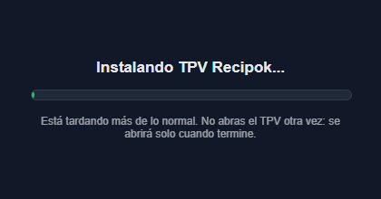

Recipok · TPV
Guía rápida para el equipo del negocio
Si el TPV no arranca o da error
Sigue estos pasos por orden. La mayoría de los problemas se arreglan en los primeros dos o tres.
Tranquilidad: reiniciar el TPV no borra las ventas ya cobradas ni los pedidos aparcados. Lo que está guardado, sigue guardado.
Paso 1 · Mira qué pasa al abrir el TPV
| Una ventanita oscura con «Instalando TPV Recipok…» y una barra verde |
Espera y no abras el TPV otra vez. Se está instalando una versión nueva y en equipos lentos puede tardar más de un minuto (hasta 3). El TPV se abrirá solo al terminar. Si avisa de que «no se ha podido terminar la actualización», ve al paso 3. |
| «Buscando actualizaciones…», «Descargando actualización…», «Actualizando el programa, no lo cierres…» |
Espera y no toques nada. El TPV se está actualizando y, con internet lento, puede tardar hasta 10–15 minutos. Se abrirá solo. No lo cierres ni apagues el ordenador. Si pasan más de 15 minutos igual, ve al paso 3. |
| «Comprobando tu conexión a internet…», «Sin internet (DNS). Esperando conexión…», «Conectado a red, pero sin salida a internet…» |
El equipo no tiene internet. Ve al paso 2. |
| «Servidor no disponible todavía. Esperando…» |
Internet o nuestro servidor van mal en este momento. Espera 5 minutos; si sigue igual, ve al paso 2 y luego al 3. |
| Sale un aviso: «El TPV ya está abierto o terminando de actualizarse» |
Hay un TPV funcionando o instalándose en segundo plano. Espera un minuto; si no aparece, ve al paso 4. |
| Pulsas el icono y no pasa nada (no sale ninguna ventana) |
Espera 2 minutos (puede estar instalándose). Si sigue igual, ve al paso 4. |
| El TPV ya está abierto pero se queda congelado, en blanco, o sale un mensaje de error |
Ve al paso 3. Antes, haz una foto con el móvil al error: nos ayudará mucho. |

Así se ve la ventanita de instalación. Si la ves, el TPV se está actualizando: no lo abras otra vez y espera a que se abra solo.
2
Comprueba que hay internet
- Con el móvil conectado al mismo wifi del negocio, abre cualquier página web. ¿Carga?
- Mira el router (la cajita de internet): sus luces deben estar fijas, no apagadas ni en rojo.
- Si no hay internet: desenchufa el router, espera 30 segundos y vuelve a enchufarlo. Tarda 2–3 minutos en volver. Si el TPV va por cable, comprueba que el cable está bien metido.
Cuando vuelva internet, el TPV sigue solo: no hace falta hacer nada más.
Recipok · TPV
Guía rápida para el equipo del negocio
3
Cierra el TPV y vuelve a abrirlo
- Si el programa responde: botón de Opciones (la rueda) → Salir del Programa. Si dice «Terminal abierta», cierra antes la caja; si el programa está bloqueado y no puedes, elige Salir sin cerrar caja (incidencia) y luego Reiniciar el programa. No se pierde nada.
- Vuelve a abrir el TPV con su icono (en el escritorio o en la barra de tareas).
Esto suele ser lo que lo arregla. Al arrancar, el TPV comprueba solo si hay una versión nueva y se actualiza. Si ves «Actualizando el programa, no lo cierres…», deja que termine: se abre solo.
4
Si al pulsar el icono no pasa nada: cierra el TPV a la fuerza
A veces queda un TPV «a medio cerrar» escondido y no deja abrir otro. Para quitarlo:
- Pulsa a la vez Ctrl + Mayús + Esc (se abre el Administrador de tareas).
- Busca TPV Recipok en la lista (puede aparecer varias veces).
- Haz clic derecho sobre cada uno → Finalizar tarea.
- Cierra el Administrador de tareas y abre el TPV con su icono.
Si no encuentras TPV Recipok en la lista, o sigue sin abrir, pasa al paso 5.
5
Reinicia el ordenador
- Botón de Inicio de Windows → Apagar o reiniciar → Reiniciar. Cuando vuelva a encenderse, abre el TPV.
- Si el ordenador está totalmente congelado y no responde a nada, mantén pulsado el botón de encendido unos 5 segundos hasta que se apague, espera un momento y vuelve a encenderlo. Hazlo solo como último recurso.
Importante: si el TPV tenía ventas en cola sin enviar (en Tickets aparecen con un código que empieza por OFF-), intenta que antes recupere internet y se envíen. No las repitas a mano sin comprobar en Tickets si ya se registraron: podrías cobrarlas dos veces.
Recipok · TPV
Guía rápida para el equipo del negocio
6
Si sigue sin funcionar: llámanos
No pierdas más tiempo con el equipo parado. Llama por orden, y pasa al siguiente número si no contestan:
Teléfonos de ayuda (por orden de prioridad)
3
691 194 777
Carlos (teléfono personal) · solo si no contestan los anteriores
Antes de llamar, ten a mano:
- El nombre del negocio y de qué equipo/terminal se trata.
- Qué pone la pantalla (la foto que hiciste con el móvil).
- Si hay internet en el negocio (la prueba del móvil del paso 2).
- Qué has probado ya (reiniciar el TPV, cerrarlo a la fuerza, reiniciar el ordenador…) y desde cuándo falla.
- La versión del TPV, si el TPV llega a abrir: se ve abajo a la izquierda, junto al punto verde (por ejemplo «v0.2.57»).
Si te lo pedimos: el archivo de registro
El TPV guarda un registro de las actualizaciones que nos ayuda a ver qué ha pasado. Si te lo pedimos:
- Pulsa Windows + R, escribe
%APPDATA%\tpvrecipok y pulsa Intro.
- Busca el archivo updater.log y envíanoslo (por WhatsApp o por correo).
Mientras se soluciona
Si hay clientes esperando, apunta las ventas en papel (producto, importe y forma de pago) y regístralas en el TPV cuando vuelva a funcionar. Si el TPV abre pero solo le falta internet, normalmente puedes seguir vendiendo: las ventas se guardan en el equipo y se envían solas cuando vuelve la conexión (lo verás en la esquina inferior izquierda: punto rojo = sin internet).
Para evitar sustos
- Cuando el TPV avise de que hay una versión nueva, actualízalo fuera del horario de servicio, con la caja cerrada. Al cerrar la caja, el TPV te lo propondrá solo: acepta la cuenta atrás.
- Reinicia el TPV al cerrar el negocio al menos una vez por semana: así se mantiene siempre al día y sin sorpresas.
- Durante una actualización no apagues el ordenador ni abras el TPV otra vez: espera a que termine.